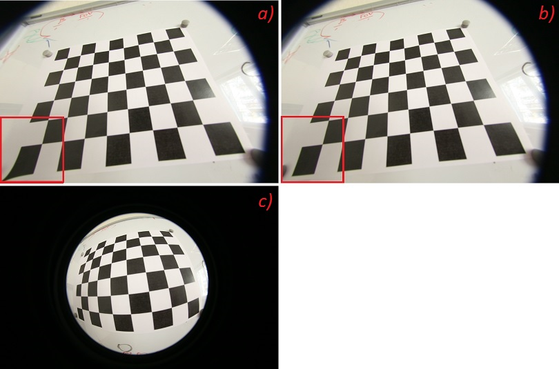

Fisheye camera model
Overview
Definitions: Let P be a point in 3D of coordinates X in the world reference frame (stored in the matrix X) The coordinate vector of P in the camera reference frame is:
// namespaces namespace cv::fisheye; // enums enum { cv::fisheye::@151::CALIB_USE_INTRINSIC_GUESS = 1 <<0, cv::fisheye::@151::CALIB_RECOMPUTE_EXTRINSIC = 1 <<1, cv::fisheye::@151::CALIB_CHECK_COND = 1 <<2, cv::fisheye::@151::CALIB_FIX_SKEW = 1 <<3, cv::fisheye::@151::CALIB_FIX_K1 = 1 <<4, cv::fisheye::@151::CALIB_FIX_K2 = 1 <<5, cv::fisheye::@151::CALIB_FIX_K3 = 1 <<6, cv::fisheye::@151::CALIB_FIX_K4 = 1 <<7, cv::fisheye::@151::CALIB_FIX_INTRINSIC = 1 <<8, cv::fisheye::@151::CALIB_FIX_PRINCIPAL_POINT = 1 <<9, }; // global functions double cv::fisheye::calibrate( InputArrayOfArrays objectPoints, InputArrayOfArrays imagePoints, const Size& image_size, InputOutputArray K, InputOutputArray D, OutputArrayOfArrays rvecs, OutputArrayOfArrays tvecs, int flags = 0, TermCriteria criteria = TermCriteria(TermCriteria::COUNT+TermCriteria::EPS, 100, DBL_EPSILON) ); void cv::fisheye::distortPoints( InputArray undistorted, OutputArray distorted, InputArray K, InputArray D, double alpha = 0 ); void cv::fisheye::estimateNewCameraMatrixForUndistortRectify( InputArray K, InputArray D, const Size& image_size, InputArray R, OutputArray P, double balance = 0.0, const Size& new_size = Size(), double fov_scale = 1.0 ); void cv::fisheye::initUndistortRectifyMap( InputArray K, InputArray D, InputArray R, InputArray P, const cv::Size& size, int m1type, OutputArray map1, OutputArray map2 ); void cv::fisheye::projectPoints( InputArray objectPoints, OutputArray imagePoints, const Affine3d& affine, InputArray K, InputArray D, double alpha = 0, OutputArray jacobian = noArray() ); void cv::fisheye::projectPoints( InputArray objectPoints, OutputArray imagePoints, InputArray rvec, InputArray tvec, InputArray K, InputArray D, double alpha = 0, OutputArray jacobian = noArray() ); double cv::fisheye::stereoCalibrate( InputArrayOfArrays objectPoints, InputArrayOfArrays imagePoints1, InputArrayOfArrays imagePoints2, InputOutputArray K1, InputOutputArray D1, InputOutputArray K2, InputOutputArray D2, Size imageSize, OutputArray R, OutputArray T, int flags = fisheye::CALIB_FIX_INTRINSIC, TermCriteria criteria = TermCriteria(TermCriteria::COUNT+TermCriteria::EPS, 100, DBL_EPSILON) ); void cv::fisheye::stereoRectify( InputArray K1, InputArray D1, InputArray K2, InputArray D2, const Size& imageSize, InputArray R, InputArray tvec, OutputArray R1, OutputArray R2, OutputArray P1, OutputArray P2, OutputArray Q, int flags, const Size& newImageSize = Size(), double balance = 0.0, double fov_scale = 1.0 ); void cv::fisheye::undistortImage( InputArray distorted, OutputArray undistorted, InputArray K, InputArray D, InputArray Knew = cv::noArray(), const Size& new_size = Size() ); void cv::fisheye::undistortPoints( InputArray distorted, OutputArray undistorted, InputArray K, InputArray D, InputArray R = noArray(), InputArray P = noArray() );
Detailed Documentation
Definitions: Let P be a point in 3D of coordinates X in the world reference frame (stored in the matrix X) The coordinate vector of P in the camera reference frame is:
where R is the rotation matrix corresponding to the rotation vector om: R = rodrigues(om); call x, y and z the 3 coordinates of Xc:
The pinhole projection coordinates of P is [a; b] where
Fisheye distortion:
The distorted point coordinates are [x’; y’] where
Finally, conversion into pixel coordinates: The final pixel coordinates vector [u; v] where:
Global Functions
double cv::fisheye::calibrate( InputArrayOfArrays objectPoints, InputArrayOfArrays imagePoints, const Size& image_size, InputOutputArray K, InputOutputArray D, OutputArrayOfArrays rvecs, OutputArrayOfArrays tvecs, int flags = 0, TermCriteria criteria = TermCriteria(TermCriteria::COUNT+TermCriteria::EPS, 100, DBL_EPSILON) )
Performs camera calibaration.
Parameters:
| objectPoints | vector of vectors of calibration pattern points in the calibration pattern coordinate space. |
| imagePoints | vector of vectors of the projections of calibration pattern points. imagePoints.size() and objectPoints.size() and imagePoints[i].size() must be equal to objectPoints[i].size() for each i. |
| image_size | Size of the image used only to initialize the intrinsic camera matrix. |
| K | Output 3x3 floating-point camera matrix \(A = \vecthreethree{f_x}{0}{c_x}{0}{f_y}{c_y}{0}{0}{1}\). If fisheye::CALIB_USE_INTRINSIC_GUESS / is specified, some or all of fx, fy, cx, cy must be initialized before calling the function. |
| D | Output vector of distortion coefficients \((k_1, k_2, k_3, k_4)\). |
| rvecs | Output vector of rotation vectors (see Rodrigues ) estimated for each pattern view. That is, each k-th rotation vector together with the corresponding k-th translation vector (see the next output parameter description) brings the calibration pattern from the model coordinate space (in which object points are specified) to the world coordinate space, that is, a real position of the calibration pattern in the k-th pattern view (k=0.. M -1). |
| tvecs | Output vector of translation vectors estimated for each pattern view. |
| flags | Different flags that may be zero or a combination of the following values:
|
| criteria | Termination criteria for the iterative optimization algorithm. |
void cv::fisheye::distortPoints( InputArray undistorted, OutputArray distorted, InputArray K, InputArray D, double alpha = 0 )
Distorts 2D points using fisheye model.
Note that the function assumes the camera matrix of the undistorted points to be indentity. This means if you want to transform back points undistorted with undistortPoints() you have to multiply them with \(P^{-1}\).
Parameters:
| undistorted | Array of object points, 1xN/Nx1 2-channel (or vector<Point2f> ), where N is the number of points in the view. |
| K | Camera matrix \(K = \vecthreethree{f_x}{0}{c_x}{0}{f_y}{c_y}{0}{0}{_1}\). |
| D | Input vector of distortion coefficients \((k_1, k_2, k_3, k_4)\). |
| alpha | The skew coefficient. |
| distorted | Output array of image points, 1xN/Nx1 2-channel, or vector<Point2f> . |
void cv::fisheye::estimateNewCameraMatrixForUndistortRectify( InputArray K, InputArray D, const Size& image_size, InputArray R, OutputArray P, double balance = 0.0, const Size& new_size = Size(), double fov_scale = 1.0 )
Estimates new camera matrix for undistortion or rectification.
Parameters:
| K | Camera matrix \(K = \vecthreethree{f_x}{0}{c_x}{0}{f_y}{c_y}{0}{0}{_1}\). |
| image_size | |
| D | Input vector of distortion coefficients \((k_1, k_2, k_3, k_4)\). |
| R | Rectification transformation in the object space: 3x3 1-channel, or vector: 3x1/1x3 1-channel or 1x1 3-channel |
| P | New camera matrix (3x3) or new projection matrix (3x4) |
| balance | Sets the new focal length in range between the min focal length and the max focal length. Balance is in range of [0, 1]. |
| new_size | |
| fov_scale | Divisor for new focal length. |
void cv::fisheye::initUndistortRectifyMap( InputArray K, InputArray D, InputArray R, InputArray P, const cv::Size& size, int m1type, OutputArray map1, OutputArray map2 )
Computes undistortion and rectification maps for image transform by cv::remap(). If D is empty zero distortion is used, if R or P is empty identity matrixes are used.
Parameters:
| K | Camera matrix \(K = \vecthreethree{f_x}{0}{c_x}{0}{f_y}{c_y}{0}{0}{_1}\). |
| D | Input vector of distortion coefficients \((k_1, k_2, k_3, k_4)\). |
| R | Rectification transformation in the object space: 3x3 1-channel, or vector: 3x1/1x3 1-channel or 1x1 3-channel |
| P | New camera matrix (3x3) or new projection matrix (3x4) |
| size | Undistorted image size. |
| m1type | Type of the first output map that can be CV_32FC1 or CV_16SC2 . See convertMaps() for details. |
| map1 | The first output map. |
| map2 | The second output map. |
void cv::fisheye::projectPoints( InputArray objectPoints, OutputArray imagePoints, const Affine3d& affine, InputArray K, InputArray D, double alpha = 0, OutputArray jacobian = noArray() )
Projects points using fisheye model.
The function computes projections of 3D points to the image plane given intrinsic and extrinsic camera parameters. Optionally, the function computes Jacobians - matrices of partial derivatives of image points coordinates (as functions of all the input parameters) with respect to the particular parameters, intrinsic and/or extrinsic.
Parameters:
| objectPoints | Array of object points, 1xN/Nx1 3-channel (or vector<Point3f> ), where N is the number of points in the view. |
| imagePoints | Output array of image points, 2xN/Nx2 1-channel or 1xN/Nx1 2-channel, or vector<Point2f>. |
| affine | |
| K | Camera matrix \(K = \vecthreethree{f_x}{0}{c_x}{0}{f_y}{c_y}{0}{0}{_1}\). |
| D | Input vector of distortion coefficients \((k_1, k_2, k_3, k_4)\). |
| alpha | The skew coefficient. |
| jacobian | Optional output 2Nx15 jacobian matrix of derivatives of image points with respect to components of the focal lengths, coordinates of the principal point, distortion coefficients, rotation vector, translation vector, and the skew. In the old interface different components of the jacobian are returned via different output parameters. |
void cv::fisheye::projectPoints( InputArray objectPoints, OutputArray imagePoints, InputArray rvec, InputArray tvec, InputArray K, InputArray D, double alpha = 0, OutputArray jacobian = noArray() )
This is an overloaded member function, provided for convenience. It differs from the above function only in what argument(s) it accepts.
double cv::fisheye::stereoCalibrate( InputArrayOfArrays objectPoints, InputArrayOfArrays imagePoints1, InputArrayOfArrays imagePoints2, InputOutputArray K1, InputOutputArray D1, InputOutputArray K2, InputOutputArray D2, Size imageSize, OutputArray R, OutputArray T, int flags = fisheye::CALIB_FIX_INTRINSIC, TermCriteria criteria = TermCriteria(TermCriteria::COUNT+TermCriteria::EPS, 100, DBL_EPSILON) )
Performs stereo calibration.
Parameters:
| objectPoints | Vector of vectors of the calibration pattern points. |
| imagePoints1 | Vector of vectors of the projections of the calibration pattern points, observed by the first camera. |
| imagePoints2 | Vector of vectors of the projections of the calibration pattern points, observed by the second camera. |
| K1 | Input/output first camera matrix: \(\vecthreethree{f_x^{(j)}}{0}{c_x^{(j)}}{0}{f_y^{(j)}}{c_y^{(j)}}{0}{0}{1}\), \(j = 0,\, 1\). If any of fisheye::CALIB_USE_INTRINSIC_GUESS, fisheye::CALIB_FIX_INTRINSIC are specified, some or all of the matrix components must be initialized. |
| D1 | Input/output vector of distortion coefficients \((k_1, k_2, k_3, k_4)\) of 4 elements. |
| K2 | Input/output second camera matrix. The parameter is similar to K1 . |
| D2 | Input/output lens distortion coefficients for the second camera. The parameter is similar to D1 . |
| imageSize | Size of the image used only to initialize intrinsic camera matrix. |
| R | Output rotation matrix between the 1st and the 2nd camera coordinate systems. |
| T | Output translation vector between the coordinate systems of the cameras. |
| flags | Different flags that may be zero or a combination of the following values:
|
| criteria | Termination criteria for the iterative optimization algorithm. |
void cv::fisheye::stereoRectify( InputArray K1, InputArray D1, InputArray K2, InputArray D2, const Size& imageSize, InputArray R, InputArray tvec, OutputArray R1, OutputArray R2, OutputArray P1, OutputArray P2, OutputArray Q, int flags, const Size& newImageSize = Size(), double balance = 0.0, double fov_scale = 1.0 )
Stereo rectification for fisheye camera model.
Parameters:
| K1 | First camera matrix. |
| D1 | First camera distortion parameters. |
| K2 | Second camera matrix. |
| D2 | Second camera distortion parameters. |
| imageSize | Size of the image used for stereo calibration. |
| R | Rotation matrix between the coordinate systems of the first and the second cameras. |
| tvec | Translation vector between coordinate systems of the cameras. |
| R1 | Output 3x3 rectification transform (rotation matrix) for the first camera. |
| R2 | Output 3x3 rectification transform (rotation matrix) for the second camera. |
| P1 | Output 3x4 projection matrix in the new (rectified) coordinate systems for the first camera. |
| P2 | Output 3x4 projection matrix in the new (rectified) coordinate systems for the second camera. |
| Q | Output \(4 \times 4\) disparity-to-depth mapping matrix (see reprojectImageTo3D ). |
| flags | Operation flags that may be zero or CALIB_ZERO_DISPARITY . If the flag is set, the function makes the principal points of each camera have the same pixel coordinates in the rectified views. And if the flag is not set, the function may still shift the images in the horizontal or vertical direction (depending on the orientation of epipolar lines) to maximize the useful image area. |
| newImageSize | New image resolution after rectification. The same size should be passed to initUndistortRectifyMap (see the stereo_calib.cpp sample in OpenCV samples directory). When (0,0) is passed (default), it is set to the original imageSize . Setting it to larger value can help you preserve details in the original image, especially when there is a big radial distortion. |
| balance | Sets the new focal length in range between the min focal length and the max focal length. Balance is in range of [0, 1]. |
| fov_scale | Divisor for new focal length. |
void cv::fisheye::undistortImage( InputArray distorted, OutputArray undistorted, InputArray K, InputArray D, InputArray Knew = cv::noArray(), const Size& new_size = Size() )
Transforms an image to compensate for fisheye lens distortion.
The function is simply a combination of fisheye::initUndistortRectifyMap (with unity R ) and remap (with bilinear interpolation). See the former function for details of the transformation being performed.
See below the results of undistortImage.
- result of undistort of perspective camera model (all possible coefficients (k_1, k_2, k_3, k_4, k_5, k_6) of distortion were optimized under calibration)
- result of fisheye::undistortImage of fisheye camera model (all possible coefficients (k_1, k_2, k_3, k_4) of fisheye distortion were optimized under calibration)
- original image was captured with fisheye lens
Pictures a) and b) almost the same. But if we consider points of image located far from the center of image, we can notice that on image a) these points are distorted.
Parameters:
| distorted | image with fisheye lens distortion. |
| undistorted | Output image with compensated fisheye lens distortion. |
| K | Camera matrix \(K = \vecthreethree{f_x}{0}{c_x}{0}{f_y}{c_y}{0}{0}{_1}\). |
| D | Input vector of distortion coefficients \((k_1, k_2, k_3, k_4)\). |
| Knew | Camera matrix of the distorted image. By default, it is the identity matrix but you may additionally scale and shift the result by using a different matrix. |
| new_size | The function transforms an image to compensate radial and tangential lens distortion. |
void cv::fisheye::undistortPoints( InputArray distorted, OutputArray undistorted, InputArray K, InputArray D, InputArray R = noArray(), InputArray P = noArray() )
Undistorts 2D points using fisheye model.
Parameters:
| distorted | Array of object points, 1xN/Nx1 2-channel (or vector<Point2f> ), where N is the number of points in the view. |
| K | Camera matrix \(K = \vecthreethree{f_x}{0}{c_x}{0}{f_y}{c_y}{0}{0}{_1}\). |
| D | Input vector of distortion coefficients \((k_1, k_2, k_3, k_4)\). |
| R | Rectification transformation in the object space: 3x3 1-channel, or vector: 3x1/1x3 1-channel or 1x1 3-channel |
| P | New camera matrix (3x3) or new projection matrix (3x4) |
| undistorted | Output array of image points, 1xN/Nx1 2-channel, or vector<Point2f> . |